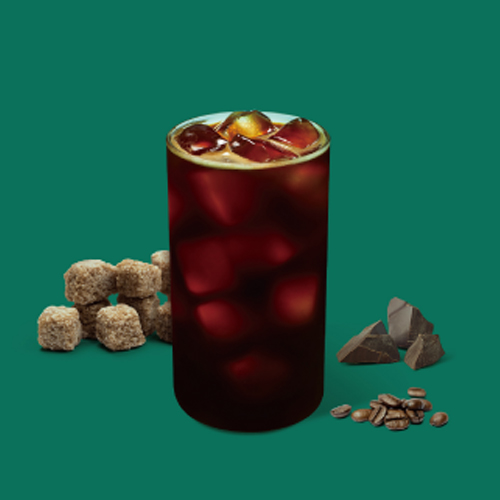
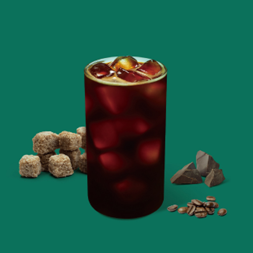

DROPTOP
지친 몸과 마음을 쉬기 위해 정상에서 마시는 커피 한잔을 일컫는 ‘드롭탑(Droptop)’ 최고의 장소에서 최상의 커피를 마신다는 컨셉에서 탄생되었습니다.
BRAND STORY
01TASTE
R&D 센터는 트렌드와 고객 요구에 부합하는 고품질 메뉴를 개발합니다. "Special Coffee" 에스프레소 메뉴에는 R&D 센터의 전문 연구원들이 수천 번의 블렌딩을 통해 개발한 "925 블렌드" 원두를 사용하여 깊은 맛과 아로마를 제공합니다.
02SERVICE
"Smart System"으로 신속하고 편리한 주문을 제공하며, "Everywhere Droptop"은 딜리버리 서비스와 원두MD로 어디서든 품질 높은 커피를 경험할 수 있습니다. 고객 존중과 행복한 미소, 청결한 매장을 통한 최상의 서비스를 제공합니다.
03PLACE
"Smart System"으로 빠르고 편리한 주문을 제공하며, "Everywhere Droptop"은 어디서든 딜리버리 서비스와 원두MD를 통해 고품질 커피를 즐길 수 있으며, 고객 존중과 청결한 매장으로 최상의 서비스를 제공합니다.

새로운 심볼마크로 머그컵 손잡이 모양의 'D'와 커피 향을 나타내는 'S'로, '스페셜(Special)'의 이니셜을 표현하여, 기존 이미지와는 다른 심플하고 감각적인 디자인을 채택하여 트렌디한 분위기를 담고자 했습니다.
 

INTERIOR CONCEPT
"White Mood"와 "Strong Blue"를 결합하여 감성과 이성을 담은 공간을 구축했습니다. 모던하고 심플한 환경 속에서 커피, 바리스타, 그리고 고객이 주인공이며 바쁜 일상 속에서도 트렌디한 여유를 즐길 수 있는 공간을 제공합니다.